Principais Trilhas do Parque Nacional da Serra dos Órgãos - PARNASO
Pedra do Sino

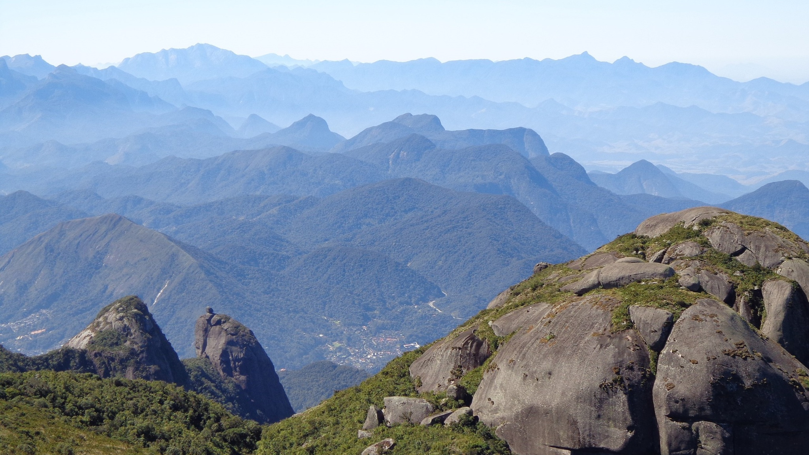
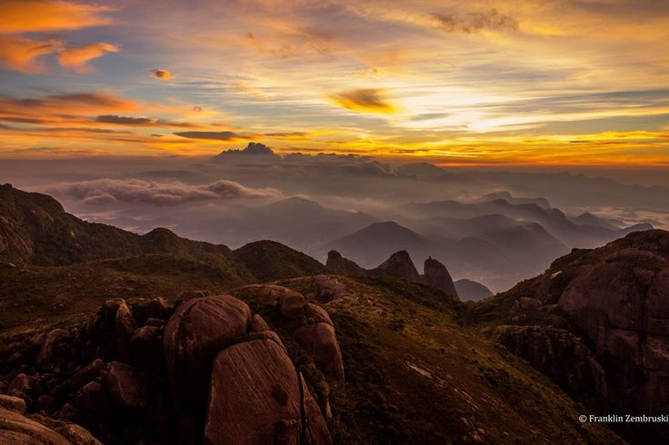
Pedra do Sino: O Teto da Serra dos Órgãos Com impressionantes 2.263 metros de altitude, a Pedra do Sino é o ponto mais alto de toda a cadeia de montanhas da Serra dos Órgãos. É o destino mais cobiçado por montanhistas de todo o país, oferecendo uma experiência de imersão profunda na natureza e uma das vistas mais espetaculares do relevo brasileiro. A Experiência da Trilha: A trilha possui cerca de 11 km de extensão (apenas subida) e é considerada de nível pesado, não pela dificuldade técnica, mas pelo esforço físico exigido. O caminho é uma antiga estrada de ferradura com subida constante, serpenteando a montanha através de diferentes ecossistemas, desde a mata densa até os campos de altitude, onde a vegetação se torna rasteira e o clima muito mais frio. Um Espetáculo nas Nuvens: O grande prêmio para quem atinge o cume é o "mar de nuvens". Do topo, é possível avistar toda a Baía de Guanabara, a cidade do Rio de Janeiro, o Maciço da Tijuca e, em dias de visibilidade perfeita, até a Serra da Mantiqueira. O pôr do sol e o nascer do sol na Pedra do Sino são considerados por muitos os mais bonitos do Brasil.
- Destaques e Curiosidades:
Dica EcoSerra: Não esqueça de levar água, agasalhos, protetor solar e, claro, recolher todo o seu lixo. Vamos preservar esse santuário!
Trilha 360
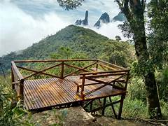
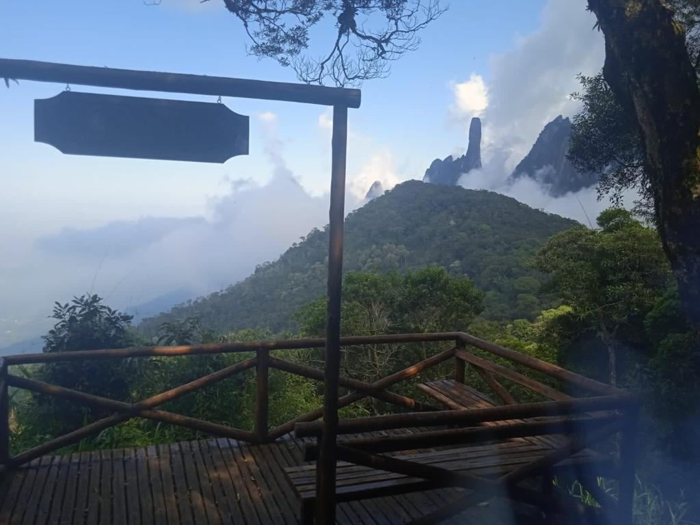
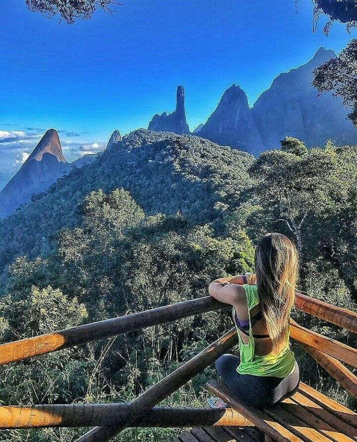
Trilha 360: Uma Visão Panorâmica da Serra. A Trilha 360 é um dos roteiros mais surpreendentes de Teresópolis, oferecendo uma perspectiva completa das formações rochosas mais famosas da região. Diferente de outras trilhas que focam em um único cume, este percurso foi planejado para proporcionar uma visão circular, permitindo que o trilheiro observe a transição entre a densa Mata Atlântica e os picos imponentes que cercam a cidade. A Experiência da Trilha: Com um nível de dificuldade moderado, a trilha é marcada por passagens por mirantes naturais e decks de madeira estrategicamente posicionados. O trajeto é envolvente e oferece pontos de descanso que são verdadeiros camarotes para a natureza. É uma caminhada ideal para quem busca conexão espiritual e visual com as montanhas sem necessariamente enfrentar as inclinações extremas de picos mais altos. O Espetáculo Visual: O grande diferencial é a mutabilidade da paisagem: em um momento você observa o Dedo de Deus e o Escalavrado, e após alguns minutos de caminhada, o horizonte se abre para revelar o Vale do Bonsucesso e a Mulher de Pedra. Em dias de céu limpo, a visibilidade alcança as montanhas mais distantes da Região Serrana, criando um panorama de 360 graus inesquecível.
- Destaques e Curiosidades:
Dica EcoSerra: Não esqueça de levar água, agasalhos, protetor solar e, claro, recolher todo o seu lixo. Vamos preservar esse santuário!
Trilha Suspensa

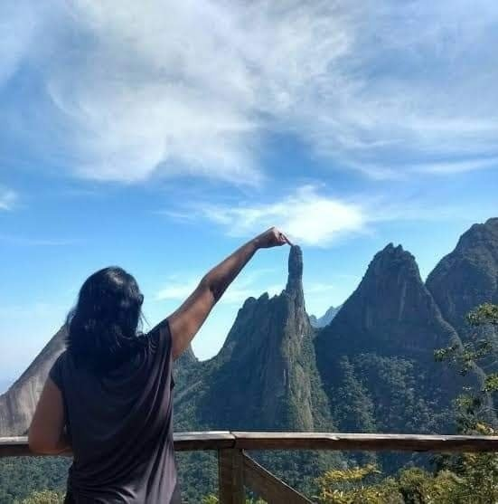
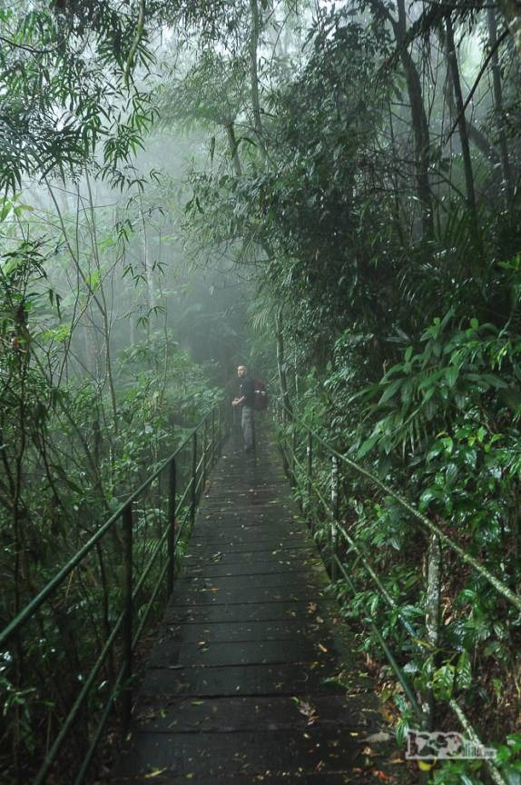
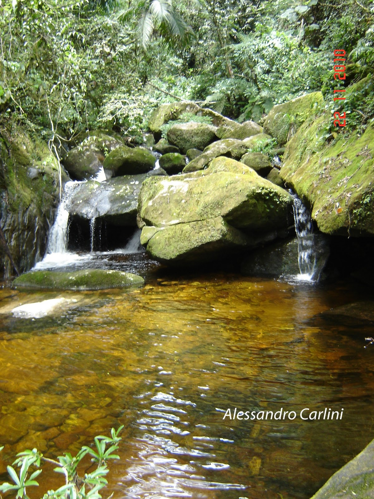
A Trilha Suspensa é uma das experiências mais encantadoras e democráticas do Parque Nacional da Serra dos Órgãos (PARNASO). Construída sobre as ruínas de um antigo aqueduto, a trilha se eleva do solo, permitindo que o visitante caminhe literalmente entre as copas das árvores. É o destino perfeito para quem deseja observar a rica biodiversidade da Mata Atlântica sob uma perspectiva privilegiada, sendo ideal para famílias, fotógrafos e observadores de aves. A Experiência da Trilha: Com um nível de dificuldade leve, a trilha é curta e possui um terreno plano e pavimentado em sua maior parte, o que garante acessibilidade a todos os públicos. Ao longo dos seus cerca de 1.300 metros (ida e volta), o visitante é cercado por uma vegetação exuberante, onde bromélias, orquídeas e samambaias gigantes compõem um cenário de floresta tropical preservada. A altura em relação ao solo proporciona uma sensação de flutuação e um contato muito próximo com o ecossistema das alturas. O Visual de Tirar o Fôlego: O grande ápice da Trilha Suspensa é a visão que se descortina nos vãos entre a vegetação. De diversos pontos, é possível avistar a imponência das montanhas da Serra dos Órgãos, com destaque para a icônica silhueta do Dedo de Deus. O contraste entre o verde profundo da floresta e o azul das montanhas ao fundo cria composições fotográficas magníficas. Além disso, a luz do sol filtrada pelas folhas cria um jogo de luz e sombra que torna o passeio quase mágico durante qualquer hora do dia.
- Destaques e Curiosidades:
Dica EcoSerra: Não esqueça de levar água, protetor solar e, claro, recolher todo o seu lixo. Vamos preservar esse santuário!
Trilha Mozart Catão
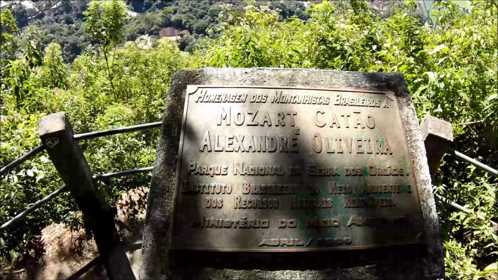
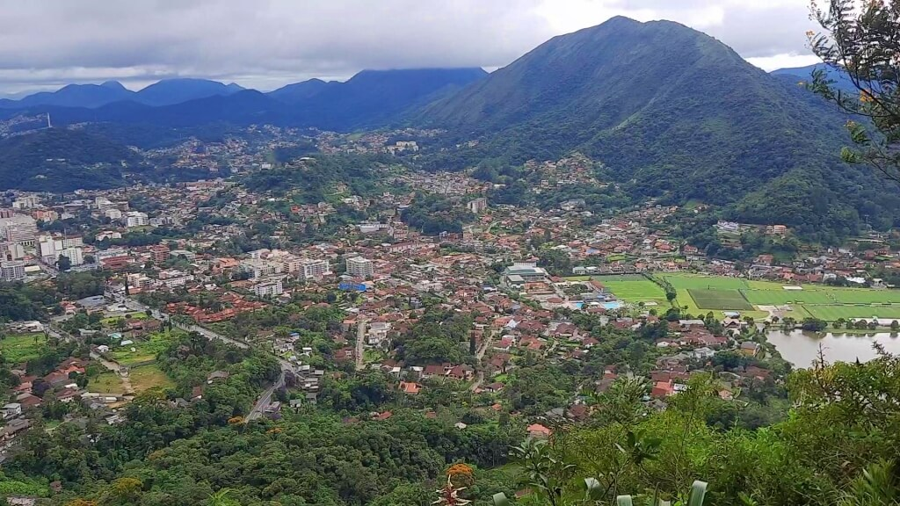
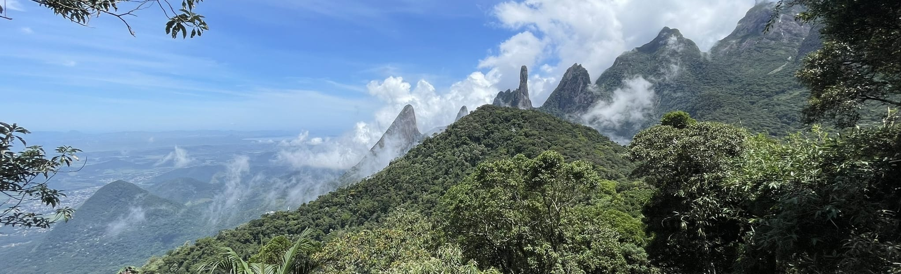
A Trilha Mozart Catão é um dos roteiros mais emblemáticos e carregados de história do Parque Nacional da Serra dos Órgãos (PARNASO). Batizada em homenagem ao lendário alpinista teresopolitano Mozart Catão — o primeiro brasileiro a escalar o Everest — esta trilha é um convite à superação e à contemplação das mesmas montanhas que inspiraram grandes nomes do montanhismo mundial. Localizada em uma encosta privilegiada, ela oferece um olhar íntimo sobre a relação entre o homem e o maciço da Serra dos Órgãos. A Experiência da Trilha: Com um nível de dificuldade moderado, a trilha apresenta uma subida constante que exige preparo físico e atenção ao fôlego. O percurso é realizado sob a proteção da mata densa, proporcionando um clima fresco mesmo em dias ensolarados. Durante a caminhada, o trilheiro encontra degraus naturais formados por raízes e pedras, em um trajeto que revela a força da natureza preservada. A trilha é muito bem sinalizada e oferece pontos de parada estratégicos para recuperar as energias antes de atingir o mirante final. O Visual de Tirar o Fôlego: Ao chegar ao Mirante Mozart Catão, o esforço é recompensado por uma vista frontal e imponente de Teresópolis e do maciço da Serra dos Órgãos. A sensação é de estar em um balcão natural, onde é possível admirar em detalhes o Dedo de Deus, o Escalavrado e a Cabeça de Peixe. Além do visual das montanhas, a perspectiva única sobre o vale da cidade cria um contraste fascinante entre a urbanização e o paredão rochoso monumental, sendo um dos melhores pontos da cidade para fotografias panorâmicas.
- Destaques e Curiosidades:
Dica EcoSerra: Não esqueça de levar água, protetor solar e, claro, recolher todo o seu lixo. Vamos preservar esse santuário!
Trilha Cartão Postal
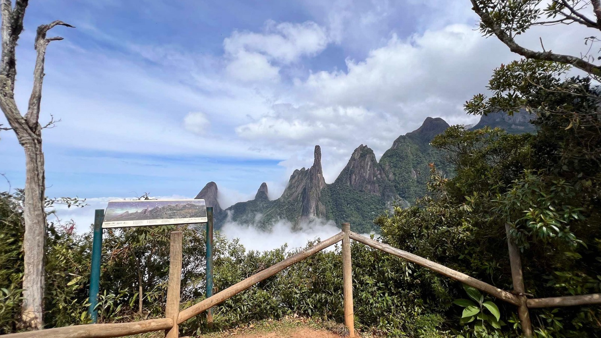
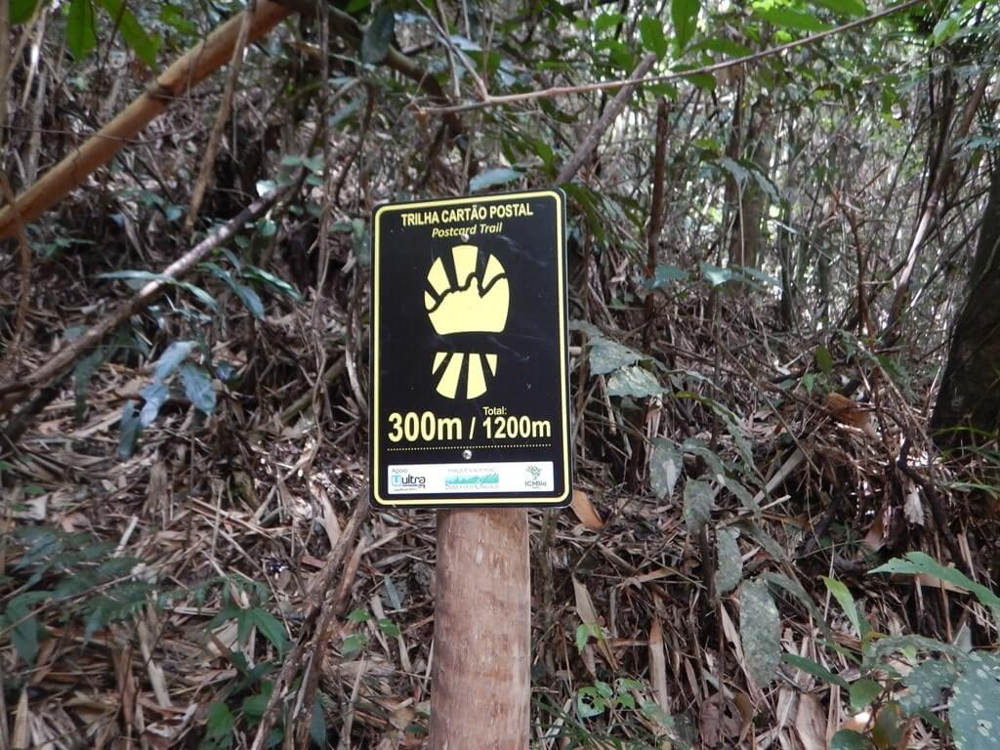
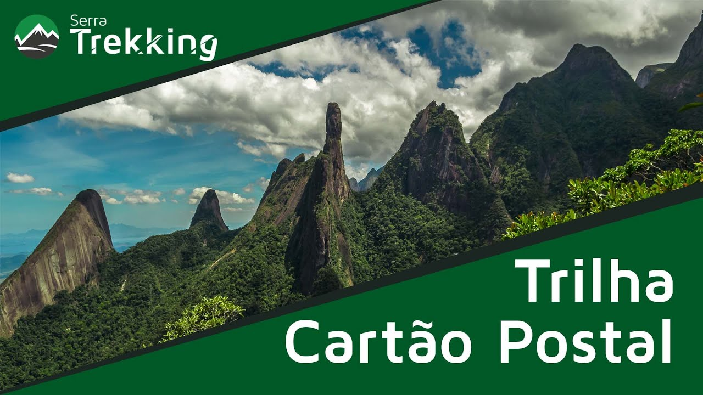
A Trilha Cartão Postal é, sem dúvida, um dos pontos mais fotogênicos e icônicos do Parque Nacional da Serra dos Órgãos (PARNASO). Como o próprio nome sugere, o destino final desta caminhada oferece uma visão perfeita e centralizada do Dedo de Deus, permitindo que o visitante contemple a magnitude da formação rochosa que é o símbolo do montanhismo brasileiro. É a trilha indispensável para quem deseja levar consigo a lembrança visual mais clássica de Teresópolis. A Experiência da Trilha: Com um nível de dificuldade moderado, a trilha é curta, mas apresenta uma subida constante que faz o coração bater mais forte. O percurso é bem estruturado e sinalizado, serpenteando por uma área de floresta ombrófila densa que exala o aroma característico da terra úmida e das flores silvestres. Durante a ascensão, o trilheiro é acompanhado pelo dossel da mata, que se abre estrategicamente em alguns pontos para oferecer pequenos "spoilers" do visual magnífico que aguarda no topo. O Visual de Tirar o Fôlego: Ao atingir o deck de observação, o visitante é confrontado com uma das panorâmicas mais imponentes da Região Serrana. A partir deste mirante, a Serra dos Órgãos se revela em toda a sua glória, com o Dedo de Deus posicionado majestosamente à frente, ladeado pelo Escalavrado e pelo Cabeça de Peixe. Em dias de "mar de nuvens", a sensação é de estar acima do mundo, observando as montanhas emergirem do nevoeiro em um espetáculo que justifica cada passo da subida.
- Destaques e Curiosidades:
Dica EcoSerra: Não esqueça de levar água, protetor solar e, claro, recolher todo o seu lixo. Vamos preservar esse santuário!
Cachoeiras Disponiveis do Parque Nacional da Serra dos Órgãos - PARNASO
Cachoeira Poço Dois Irmãos
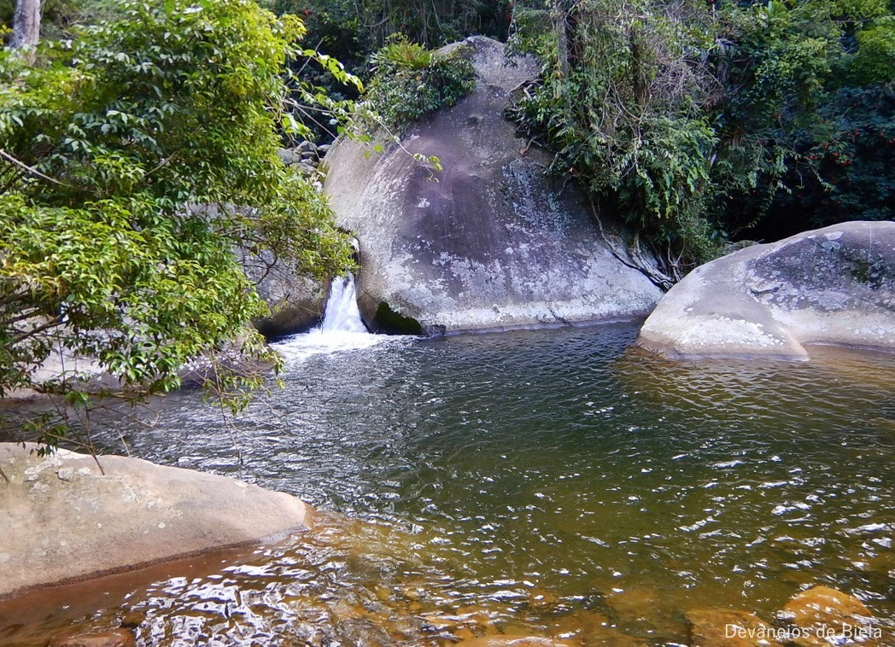

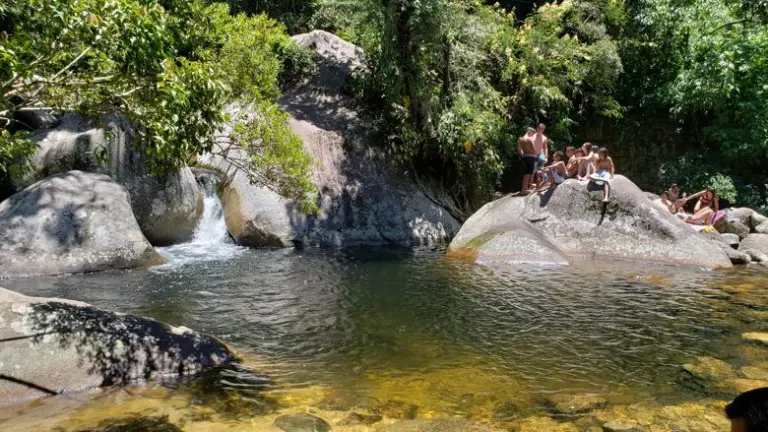
A Cachoeira Poço Dois Irmãos é o destino ideal para quem busca a paz que só o som da água corrente pode proporcionar. Localizada em um cenário de tirar o fôlego dentro do PARNASO, ela se destaca por suas águas extremamente límpidas e pedras imponentes que emolduram o poço. É o lugar perfeito para um mergulho relaxante após uma caminhada leve, oferecendo um contato íntimo com a biodiversidade da Mata Atlântica.
Dica EcoSerra: Não esqueça usar calçados adequadosde, levar água, protetor solar e, claro, recolher todo o seu lixo. Vamos preservar esse santuário!
Cachoeira Véu da Noiva
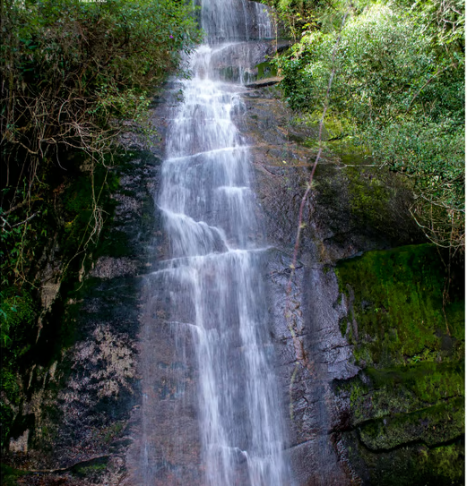
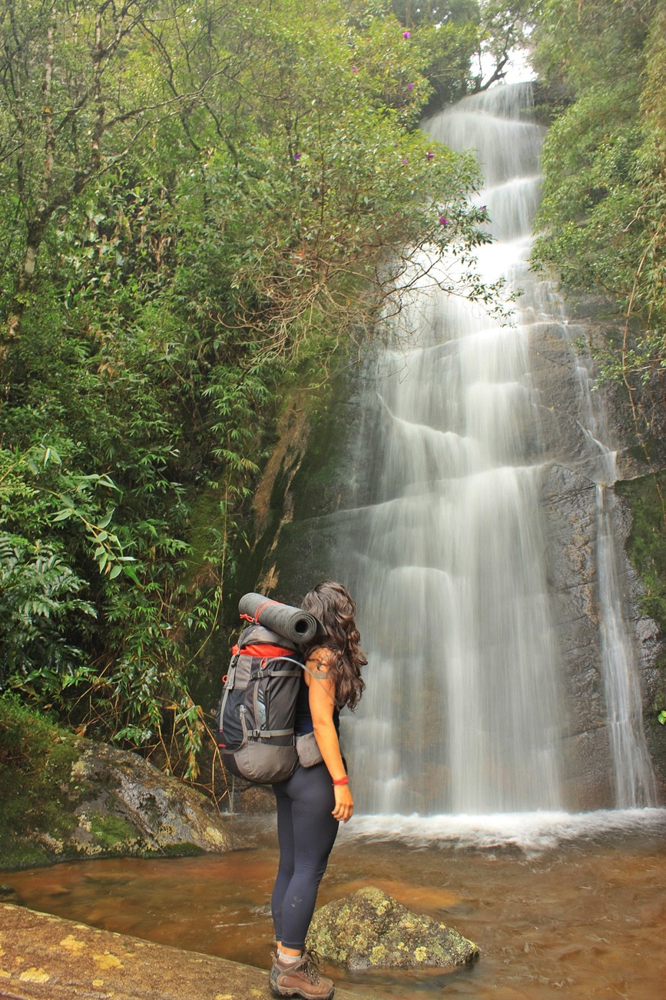
A Cachoeira Véu de Noiva que faz parte do PARNASO (Parque Nacional da Serra dos Órgãos) fica tecnicamente na Sede Petrópolis do parque (no bairro Bonfim). Embora o parque una as cidades de Teresópolis, Petrópolis, Guapimirim e Magé, o acesso principal a essa queda específica é pelo lado petropolitano.Majestosa e imponente, a Cachoeira Véu de Noiva faz jus ao nome com sua queda longa e branca que desliza suavemente sobre o paredão rochoso. É uma das paradas mais icônicas para quem explora o Parque Nacional. Sentir a névoa refrescante que sobe do impacto da água é uma experiência sensorial inesquecível. Um verdadeiro espetáculo visual que conecta você diretamente com a força da Serra dos Órgãos.
Dica EcoSerra: Não esqueça usar calçados adequadosde, levar água, protetor solar e, claro, recolher todo o seu lixo. Vamos preservar esse santuário!
Piscinão - Águas Naturais
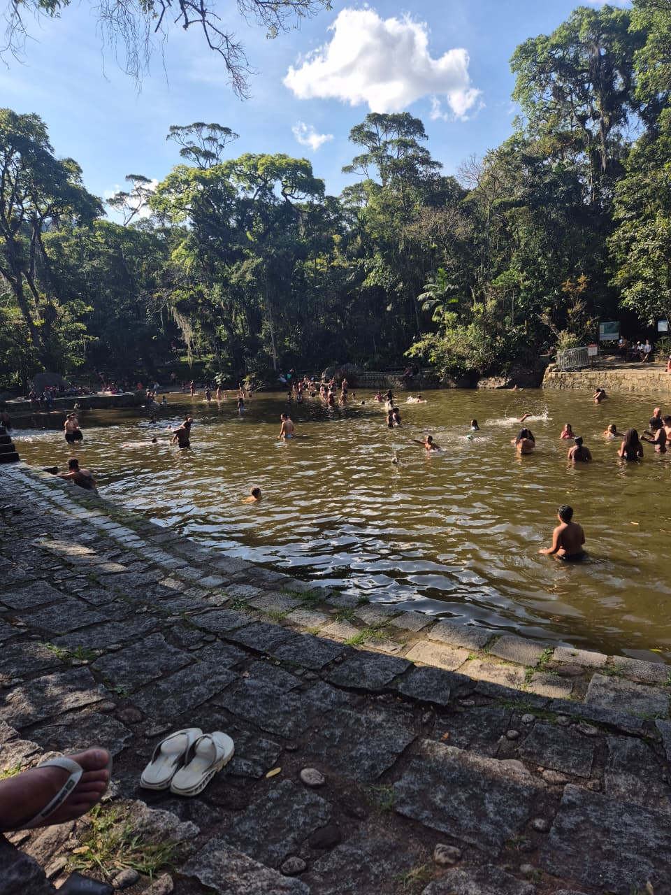
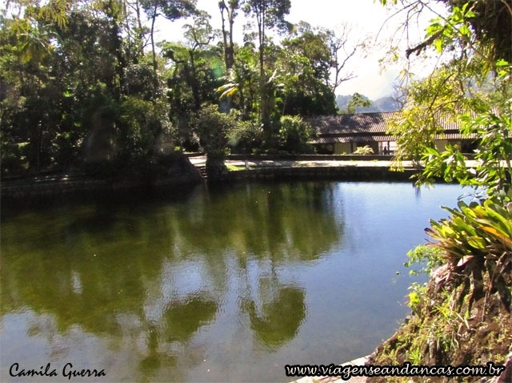
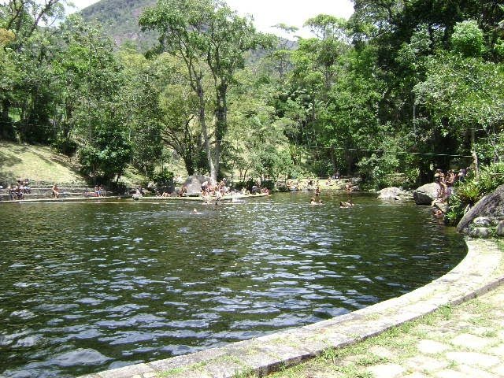
O famoso Piscinão é o ponto de encontro preferido de quem visita o Parque em busca de diversão garantida. Formado por águas naturais e cercado por uma estrutura que lembra uma grande piscina ao ar livre, o local combina o melhor da natureza com a praticidade. Com áreas de profundidade variada, é o local mais democrático do parque: enquanto os pequenos se divertem com segurança nas partes rasas, os adultos aproveitam a imensidão das águas mais profundas para nadar à vontade.
Dica EcoSerra: Não esqueça usar calçados adequadosde, levar água, protetor solar e, claro, recolher todo o seu lixo. Vamos preservar esse santuário!